After downloading three tracks from three different genres from a free online source, I loaded the tracks into SonicVisualiser and produced a Spectrogram, Mel Frequency Cepstral Coefficients and Chromagram for each track. The images can be see below with links to download the raw CSV data
| Song | Chromagram / Mel Frequency Cepstral Coefficients / Spectrogram |
|---|---|
| Farewell - Thorn Shout | 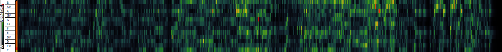 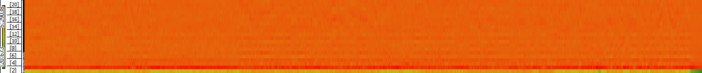 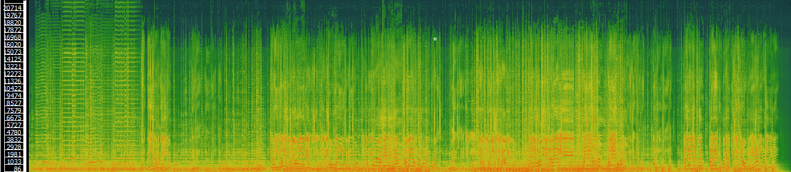 |
| Hachiko (The Faithful Dog) - The Kyoyo Connection | 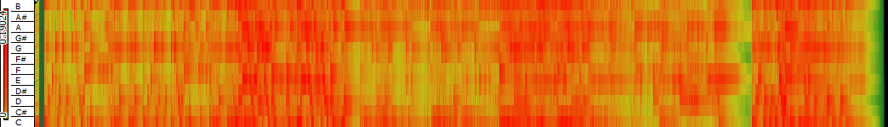 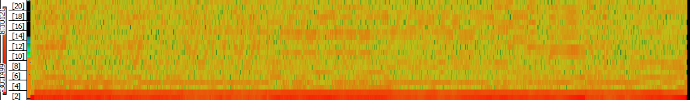 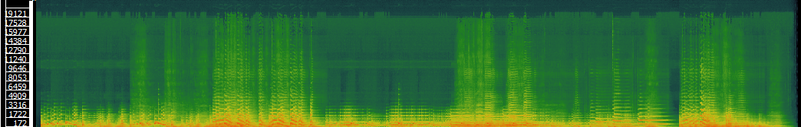 |
| woah - Vincent Augustus | 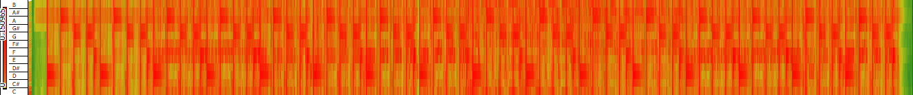 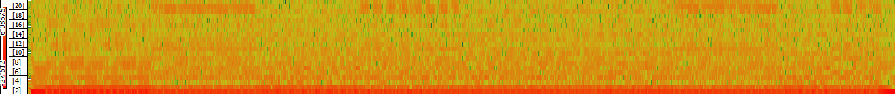 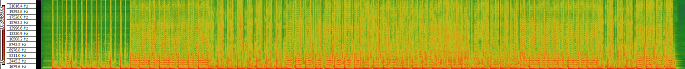 |
In this task I loaded the raw MFCC features into Python and computed the histograms for the features in the three tracks.
| Farewell | Hachiko (The Faithful Dog) | woah |
|---|
| 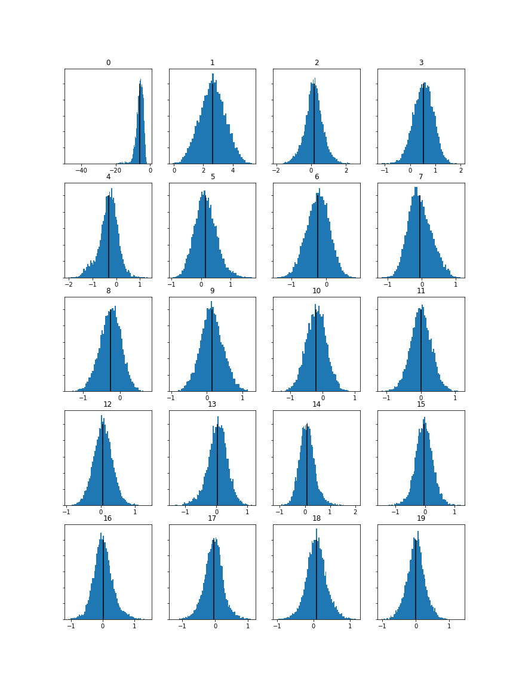 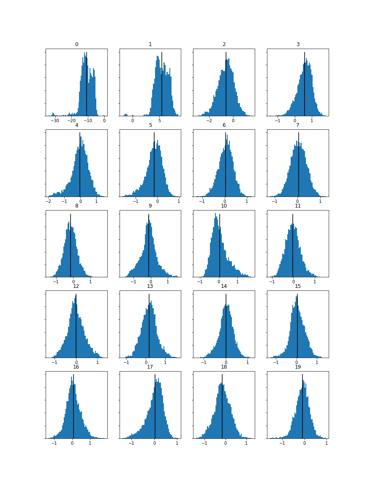 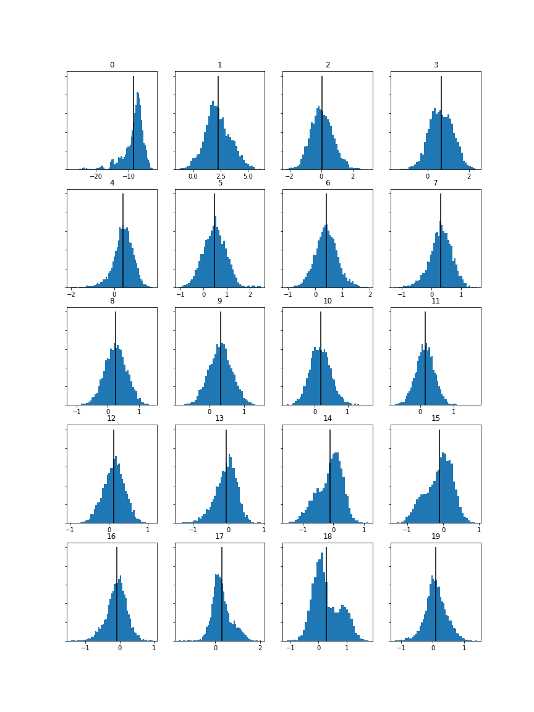 |
ANALYSIS GOES HERE |